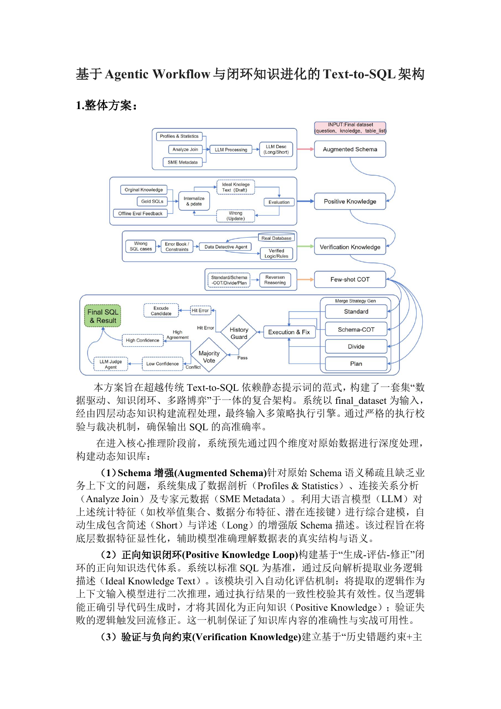

证书与事实
这部分给出可直接核验的奖项事实。页面是独立发布的证明材料，不代表腾讯官方页面；官方赛事入口见 https://tgac.tencent.com/。
方案总览
本方案面向比赛中的 Text-to-SQL 任务：输入自然语言问题和赛题数据库 schema，输出可执行 SQL。 最终策略不是单一 prompt，而是围绕 schema 增强、知识库构建、候选生成、执行反馈和结果选择形成闭环。
- 先用数据剖析、join 发现、业务知识和 LLM 描述构建 Augmented Schema，提高选表选列的命中率。
- 从 gold SQL、正确样例和评测反馈中沉淀 Positive Knowledge，让系统复用已经验证过的业务规则。
- 通过 Verification Knowledge、负向约束和 History Guard，把历史错法转化为生成阶段的防线。
- 用多路线生成、Execution & Fix、Majority Vote 和 LLM Judge 降低单次生成不稳定带来的风险。
Agentic Workflow
方案的核心是把 Text-to-SQL 拆成可检查、可回写、可复用的 Agentic Workflow。每次错误不是只修当前 SQL， 还会反向更新知识、负样例和验证规则，让后续问题少踩同一类坑。

闭环知识进化
知识库是这个方案里最重要的资产。它把 schema、业务规则、正确推理和错误反馈拆成不同层级，供检索、prompt 组装和校验模块使用。
Augmented Schema
通过字段统计、TopK、时间范围、join 候选、SME 元数据和 LLM 描述，把静态 schema 变成适合 Agent 推理的富 schema。
Positive Knowledge
从 gold SQL 与正确结果中提取稳定规则，例如时间分区、指标口径、固定过滤条件和常见汇总方式。
Verification Knowledge
用 Data Detective Agent 主动探查数据分布，把可验证的业务逻辑写入知识库，避免只靠模型猜测字段含义。
Few-shot CoT
通过反向推理生成可复用链路，结合向量检索为每个问题召回相似样例，让 prompt 里既有 SQL 也有推理过程。
生成与执行
SQL 生成阶段采用多策略并行，不把最终答案押在一次调用上。候选 SQL 进入执行验证后，根据报错、空结果、历史错法和结果一致性继续修正或裁决。
Standard / Schema-COT / Divide / Plan
四类路线覆盖直接生成、schema 推理、问题拆解和计划式生成，让不同题型可以走更合适的思考路径。
Execution & Fix
候选 SQL 会在 StarRocks 兼容环境中执行，语法错误、列名错误、类型错误会被回传给模型进行定向修复。
History Guard
历史错误结果会被签名化保存，后续遇到相似问题时作为负向约束，阻止系统重复选择已知错误路线。
Majority Vote 与 LLM Judge
多个候选结果归一化后做 Majority Vote；如果结果冲突，再交给 LLM Judge 结合问题、证据和执行结果仲裁。
经验复盘
Prompt 不是全部
Text-to-SQL 的瓶颈经常在 schema 质量、指标口径和数据分布。先把上下文做扎实，比继续堆长 prompt 更有效。
正确知识要沉淀
每次跑通的 SQL 都应该转化为可复用规则，尤其是时间分区、去重口径、状态过滤和多段汇总。
错误也有价值
错误 SQL、错误结果和空结果可以变成负向约束。比赛后期，防止重复犯错比多生成几个候选更关键。
执行反馈必须闭环
只让模型“看起来合理”是不够的；把执行错误、结果差异和历史反馈接回系统，才能稳定提高命中率。
代码与复现
仓库公开的是脱敏精简版代码，保留方案结构和关键模块，移除 API key、私有数据库地址、运行日志、大型结果文件、模型缓存和原始敏感配置。
Source overview
Runtime agent
Config template
Knowledge guides
公开代码用于说明方案思路和模块边界。真实复现仍需要本地准备比赛数据、StarRocks/MySQL 兼容环境、embedding 模型、LLM key 和私有配置。
直接链接
Published proof URL
https://terra901.github.io/TAGC-Data-Intelligence-Decision-Science/
GitHub repository
https://github.com/terra901/TAGC-Data-Intelligence-Decision-Science